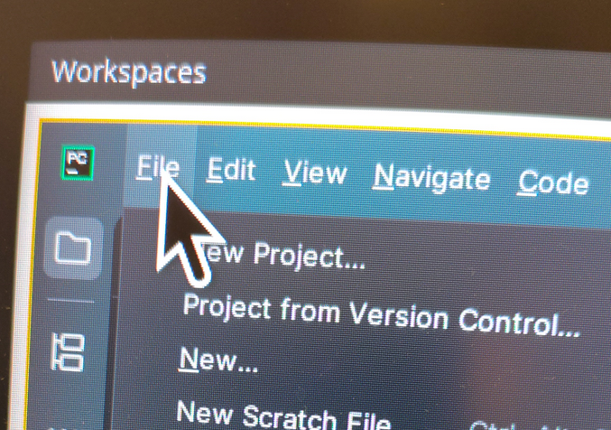

Here is a fun one to start the holidays!
After upgrading to Pop 24.04 I had a nasty case of inconsistent pointers. Specifically when using any of the Jetbrains IDEs (PyCharm, DataGrip, Rider, etc.).
Moving the pointer onto ANY of the IDEs would blow up the cursor to a comical size. Probably something to do with how scaling (does not?) work properly for some stuff when the whole Wayland vs X11 thing crops up on your machine.
 Took a picture because screenshotting your pointer is hard...
My Linux foo is not good enough to fully explain why any of this is happening (something with Java, X and Wayland fighting), but you can set properties for the stuff that is depending on X using a file in your home directory.
Create a new file called .Xresources in your home directory.
Edit the file (nano, VSCode, whatever) and add the following:
Xcursor.size: 24Reboot to make sure everything picks up on the new settings and your pointer should now look right again when using Jetbrains IDEs.
Happy holidays!